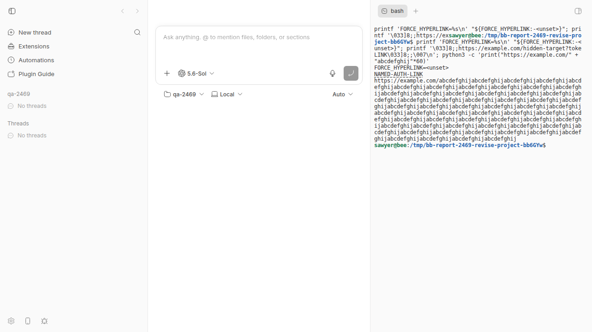

#2469 · Terminal hyperlink targets can become inaccessible in bb
Verdict: REPRODUCED · Root-cause confidence: high
1. TL;DR
bb terminals do not set FORCE_HYPERLINK. Programs that require this signal remove OSC 8 targets and print labels only.
The shared terminal view also omits an OSC 8 handler. Therefore, bb cannot show and open the concealed target through its navigation flow.
On macOS, xterm can replace the prior selection during a right-click. An outer event handler can then read the replacement word.
PR #2479 fixes the host and link paths. Its copy fix has an event-order defect.
2. Claims vs findings
| Claim from the issue | Status | Evidence |
|---|---|---|
| The child process cannot detect OSC 8 support. | Verified | The live terminal printed FORCE_HYPERLINK=<unset>. The focused host test failed on the missing value. |
| Conditional programs can remove the target and print only a label. | Verified | supports-hyperlinks returned false without the variable. It returned true with value 1. |
| bb does not route named OSC 8 links through its safe navigation flow. | Verified | The xterm options omit linkHandler. A click on the named label caused no bb dialog and opened no page. |
| The macOS context menu can reduce a soft-wrapped selection. | Verified from source | xterm sets rightClickSelectsWord on macOS. A real xterm event check replaced alpha with charlie before the outer handler ran. |
| Issues #1764 and #1590 have different causes. | Verified | #1764 covers mobile touch controls. #1590 covers Clipboard API access on a plain HTTP origin. |
3. Environment
- bb commit:
ad79bbb5ec909524f8f281e62d860c588a86f332. - OS: Linux
7.0.0-30-generic, x86_64. - Node:
v24.18.0, ABI137. - App:
http://localhost:15950. - Server:
http://localhost:23950. - Host daemon:
http://127.0.0.1:31950. - Data:
/home/sawyer/.bb-dev/bb-report-worktrees-bb-report-2469-revise-mkaxsd-b47864960639. - xterm:
6.1.0-beta.292.
The Linux run covered the shared hyperlink path. Source inspection covered the macOS selection branch.
4. Minimal reproduction
- Create a private worktree at the report base commit. Then install and build it.
git worktree add --detach /tmp/bb-2469 ad79bbb5ec909524f8f281e62d860c588a86f332 cd /tmp/bb-2469 pnpm install --frozen-lockfile --prefer-offline --package-import-method=copy pnpm exec turbo run build
- Start the isolated app. Then load its environment values.
scripts/bb-dev-app current eval "$(scripts/bb-dev-app env)"
- Create a git repository and a project for the terminal.
scratch_repo=$(mktemp -d /tmp/bb-2469-project-XXXXXX) git init "$scratch_repo" host_id=$(pnpm bb:dev machine list --json | jq -r '.[0].id') curl -fsS -X POST "$BB_SERVER_URL/api/v1/projects" \ -H 'content-type: application/json' \ -d "$(jq -n --arg path "$scratch_repo" --arg hostId "$host_id" \ '{name:"qa-2469",source:{type:"local_path",path:$path,hostId:$hostId}}')"The clean run returned a project with name
qa-2469and the requested local path. - Open the printed app URL. In the composer, select Project → qa-2469.
- Select Show right panel. The shortcut is
Ctrl+J. - Select Start terminal. Wait for the
bashtab. - Enter this command in that terminal.
printf 'FORCE_HYPERLINK=%s\n' "${FORCE_HYPERLINK:-<unset>}"; \ printf '\033]8;;https://example.com/hidden-target?token=secret\007NAMED-AUTH-LINK\033]8;;\007\n'; \ python3 -c 'print("https://example.com/" + "abcdefghij"*60)' - Primary-click and Control-click
NAMED-AUTH-LINK. Record any dialog, navigation, or new browser page.
Expected output and action:
FORCE_HYPERLINK=1 NAMED-AUTH-LINK [bb shows the exact target before it opens the link]
Actual output and action:
FORCE_HYPERLINK=<unset> NAMED-AUTH-LINK [the bb navigation flow does not run]

Download the focused test patch into the repository root as force-hyperlink.patch.
git apply ./force-hyperlink.patch cd apps/host-daemon pnpm exec vitest run src/terminals/terminal-manager.test.ts --reporter=verbose
FAIL TerminalManager > opens a PTY in the workspace and keeps the environment active - "FORCE_HYPERLINK": "1", Test Files 1 failed (1) Tests 1 failed | 28 passed (29)
Repro files: test patch, test output, live log.
5. Root cause
5.1 The host does not advertise hyperlink support
The terminal environment sets color and terminal variables. It does not set a hyperlink capability variable.
See terminal-manager.ts lines 352–363.
A detection package then reports no support. A conditional program can discard the target before bb receives terminal output.
5.2 The app handles visible URLs only
The app creates xterm without linkHandler. It loads WebLinksAddon, which detects visible URL text only.
See ThreadTerminalView.tsx lines 807–829.
Thus, the app cannot keep OSC 8 origin data. It also cannot show the concealed target before navigation.
5.3 macOS changes the selection on a right-click
bb already reads logical text through terminal.getSelection() for its selection menu.
See ThreadTerminalView.tsx lines 652–667.
However, the native context menu remains active. xterm enables word selection on a macOS right-click.
PR #2479 reads the selection from an outer React event. The nested xterm listener runs first and can replace that selection.
{"before":"alpha","outer":"charlie","after":"charlie","screen":{"width":108,"height":90}}
The check used the real installed xterm package. The exact source and procedure are in xterm-macos-selection-source.txt.
6. Proposed fix (first principles)
- Set
FORCE_HYPERLINK=1inbuildTerminalEnv. - Add an xterm OSC 8 handler in the shared app terminal.
- Keep the link origin as
osc8ordetected-url. - Show the exact OSC 8 target before external navigation.
- Read
terminal.getSelection()during the capture phase, before xterm handlescontextmenu. - Use the shared app path for mobile because PR #2515 removed the native terminal.
This change does not alter a server-to-daemon message. It does not need a protocol version increase.
FORCE_HYPERLINK=1 also affects redirected child output. Users can set value 0 for commands that need plain output.
7. PR review
#2479 · Fix terminal hyperlinks and wrapped selection copying
Verdict: REQUEST CHANGES
The host and link changes address those causes. The copy change does not preserve the original selection in all event sequences.
Correctness blocker: xterm handles contextmenu on the nested terminal before React handles it on the outer element.
On macOS, xterm can replace the selection before PR #2479 calls terminal.getSelection().
The event-level check changed alpha to charlie before the outer handler read it.
Capture the selection before xterm handles the event. Add a test with the real xterm event sequence.
Merge blocker: GitHub reports DIRTY and CONFLICTING. The branch has six modify/delete conflicts under apps/mobile.
PR #2515 removed the native terminal after this branch started. A simple conflict resolution would also add two unused native terminal files.
Drop all eight apps/mobile changes. The new mobile shell uses the shared app terminal.
Coverage finding: The copy test calls a pure helper. It cannot detect the event-order defect.
Checks run on PR head 0286d10565e0cac4adf1a9c40d082034c60f4686:
- Host terminal tests: 29 passed.
- App terminal tests: 25 passed.
- Mobile terminal tests: 18 passed.
- Turbo type checks: 6 tasks passed.
git diff --check: passed.- Revision event check: original
alpha; outer handler readcharlie.
Review log: pr-2479-review.txt.
8. Related issues
- #1764 covers mobile touch selection and copy controls.
- #1590 covers Clipboard API failures on plain HTTP origins.
- #2515 replaced the native mobile UI with the shared PWA.
9. Appendix
Key commands
gh issue view 2469 --comments gh pr view 2479 --json ... gh pr diff 2479 pnpm install --frozen-lockfile --prefer-offline --package-import-method=copy pnpm exec turbo run build scripts/bb-dev-app current pnpm bb:dev machine list --json curl -X POST "$BB_SERVER_URL/api/v1/projects" ... pnpm exec vitest run src/terminals/terminal-manager.test.ts --reporter=verbose gh pr checkout 2479 pnpm exec turbo run typecheck --filter=@bb/app --filter=@bb/host-daemon --filter=@bb/mobile git merge-tree --write-tree ad79bbb5ec909524f8f281e62d860c588a86f332 origin/pr-2479
What the investigation ruled out
- The current
origin/mainstill omits the host variable and OSC 8 handler. - The failure does not come from the terminal WebSocket protocol.
- The failure does not require a host daemon protocol change.
- The plain HTTP Clipboard API issue has a different cause.
The macOS copy branch was not run on macOS hardware. The event check set the exact xterm option that macOS enables.
Verification
The verifier reproduced the live defect after it created a project, showed the right panel, and started the terminal.
This revision adds those exact steps. It also replaces the author-specific patch path with a local download step.
The revision repeated the live run and the focused test. It recorded one failed test and 28 passed tests.
The revision also ran a real xterm context-menu event. That check found the PR event-order defect and changed the review.